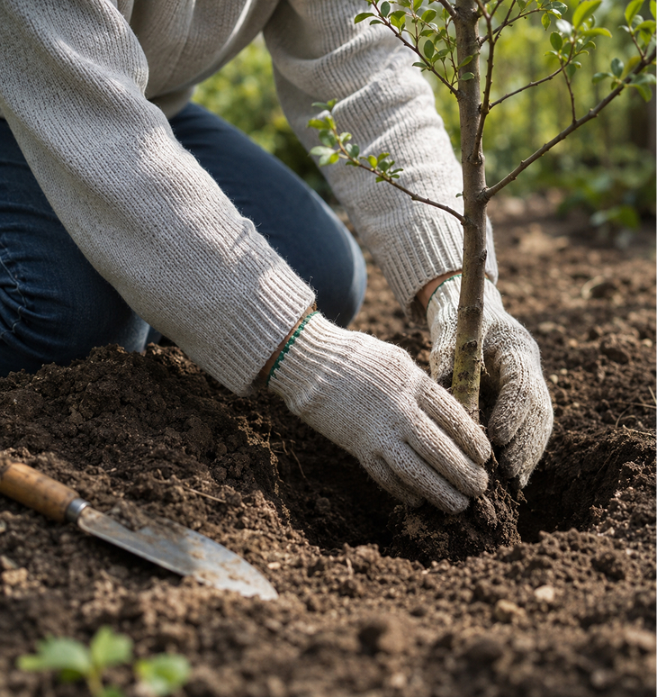

«Ми не просто даємо поради — ми вирощуємо спільноту»
OldDuck’s Garden — простір, де народжуються справжні сади.
Ми - команда молодих, але вже досвідчених спеціалістів, об’єднаних однією ідеєю: перетворювати звичайні ділянки на живі, плодоносні та гармонійні сади. Заснована у 2026 році, наша компанія зібрала майстрів своєї справи - людей, які не просто знають садівництво, а відчувають його. Наші знання - це роки практики, експериментів і любові до кожного дерева. Ми віримо, що з будь-якої землі можна створити куточок, який буде радувати око, надихати і приносити щедрий урожай. Ми не обмежуємося простими порадами на кшталт «як посадити дерево». Наша місія - дати повне розуміння того, як створити культурний, доглянутий сад: від перших кроків до моменту, коли кожне дерево досягає свого максимуму - у красі, здоров’ї та плодоношенні.
OldDuck’s Garden — це місце, де знання перетворюються на результат, а робота - на справжнє задоволення.

Сплануємо сад для вашої ділянки.
Оберіть найкращі сорти дерев.
Знайдіть інформацію по догляду.